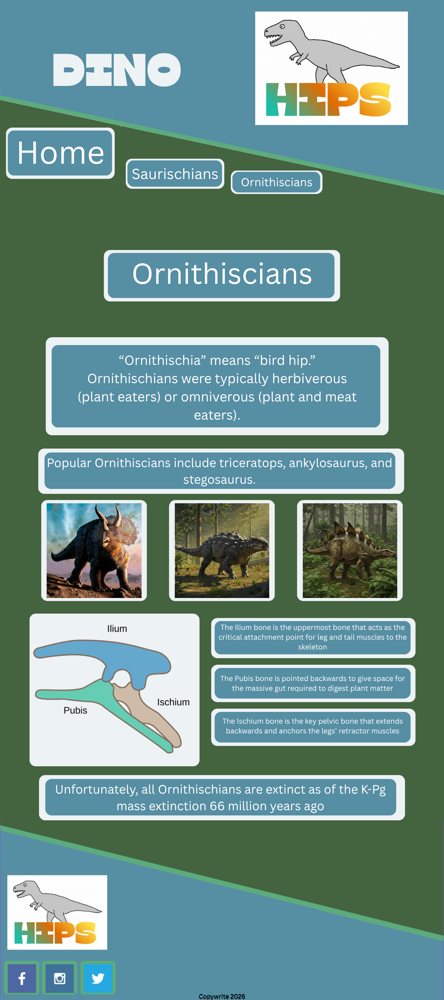

Ornithischians
Ornithischia
"Ornithischia" means "bird hip." Ornithischians were typically herbivorous or omnivorous dinosaurs.
Popular ornithischians include triceratops, ankylosaurus, and stegosaurus.
- The ilium is the uppermost hip bone and an important attachment point for leg and tail muscles.
- The pubis points backward and helps create space for the gut needed to digest plant matter.
- The ischium extends backward and anchors leg retractor muscles.
